Ensuring Container Security in OpenShift: A Guide to Image Validation and Key Verification
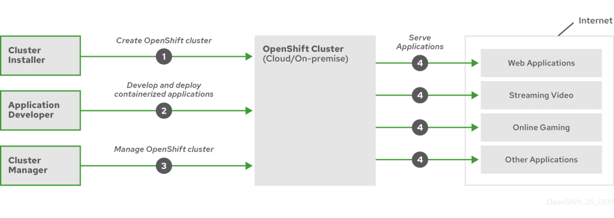
While in the background advisor mentions
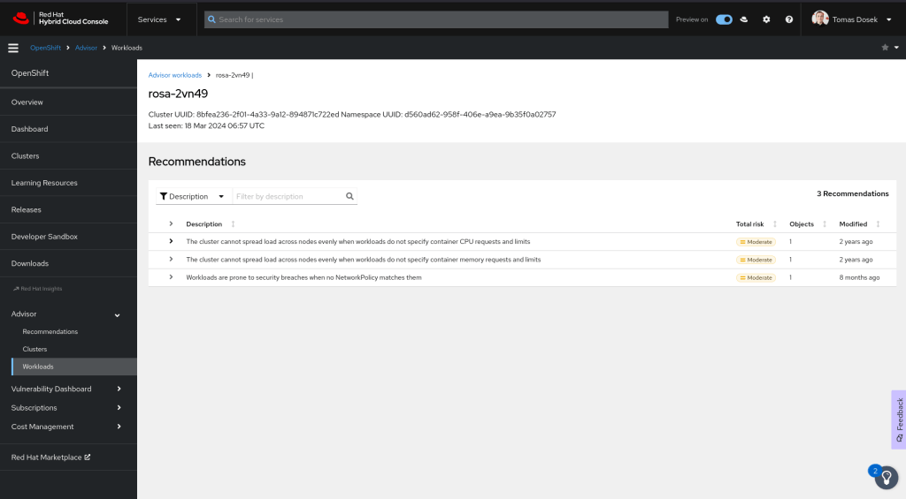
In OpenShift, image validation through a determined key involves ensuring that container images meet specific criteria before being deployed within the cluster. This process is crucial for maintaining security, compliance, and operational stability. Here's an overview of how image validation can be achieved in OpenShift using various methods and tools:
1. Image Signature Verification
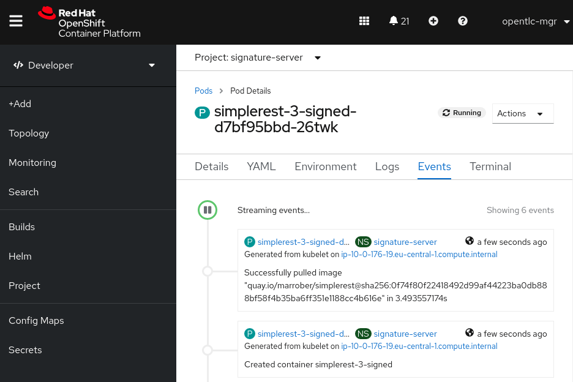
OpenShift supports image signature verification, which allows administrators to enforce policies requiring images to be signed by a trusted entity. This ensures that only images from trusted sources are deployed in the cluster. ( Using a signature server )
-
Steps to Enable Image Signature Verification:
-
Enable Image Signature Checking: Modify the OpenShift configuration to enable image signature verification.
-
Create a Signature Key: Use tools like GPG or Red Hat's Atomic CLI to create a signing key.
-
Sign the Images: Sign container images with the created key.
-
Configure OpenShift to Trust the Key: Import the public part of the signing key into OpenShift’s trusted key store.
-
Apply Policies: Set up admission policies that enforce image signature verification.
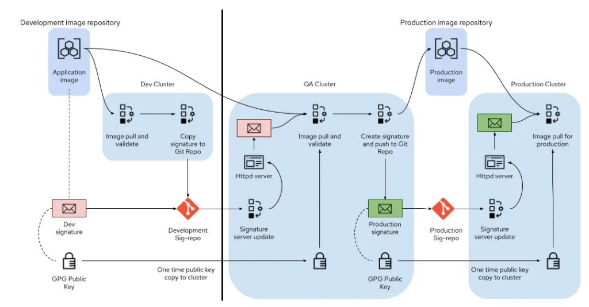
2. Admission Controllers and Security Context Constraints (SCC)
OpenShift uses admission controllers to enforce policies on Kubernetes objects. These controllers can validate images based on various criteria, including image signatures.
- Security Context Constraints (SCC): SCCs can be used to define a set of conditions that a pod must meet to be allowed to run in the cluster. This includes constraints on image origins, user access, and capabilities.
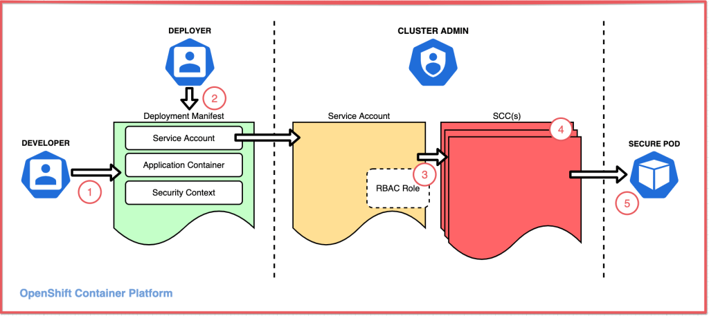
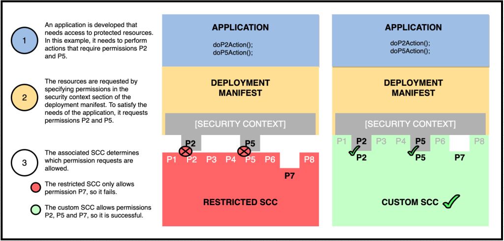
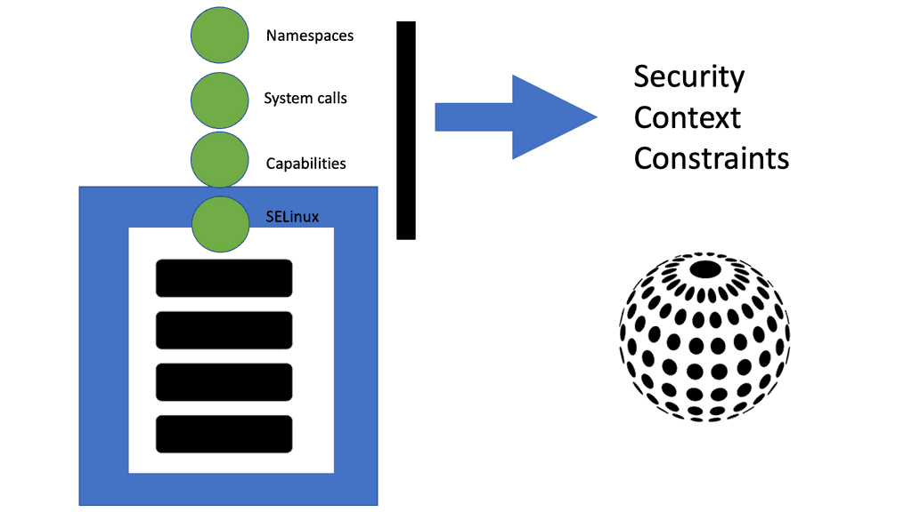
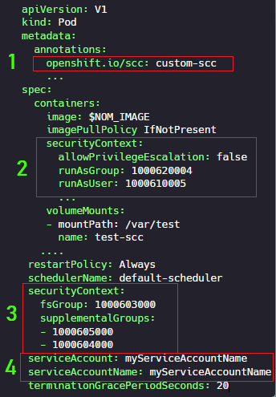
3. Image Streams and ImagePolicies
OpenShift’s ImageStreams provide a mechanism to track changes to images in a registry. You can use ImagePolicies to enforce image content or origin policies, preventing the use of images that do not meet specific criteria.
-
Image Stream Tags: By using ImageStream tags, administrators can create policies that only allow certain tags (e.g.,
latest,stable) from trusted registries. -
ImagePolicyWebhook: An ImagePolicyWebhook can be configured to call an external service to validate images before they are deployed. This allows for custom logic to be applied to the validation process.
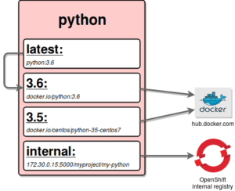
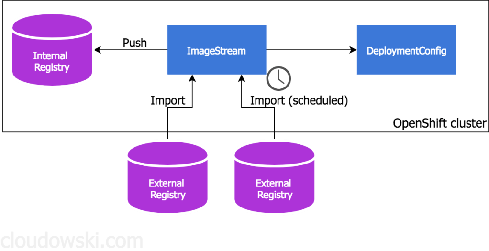
4. Open Policy Agent (OPA) and Gatekeeper
Open Policy Agent (OPA) is a policy engine that can enforce fine-grained, context-aware policies on OpenShift resources.
- Gatekeeper: This is a Kubernetes-native policy controller that uses OPA to enforce policies. Gatekeeper allows you to define and enforce custom policies on image validation (like checking for known vulnerabilities, image source, etc.).
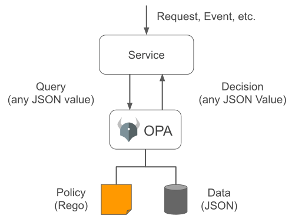
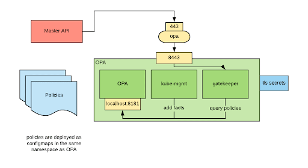
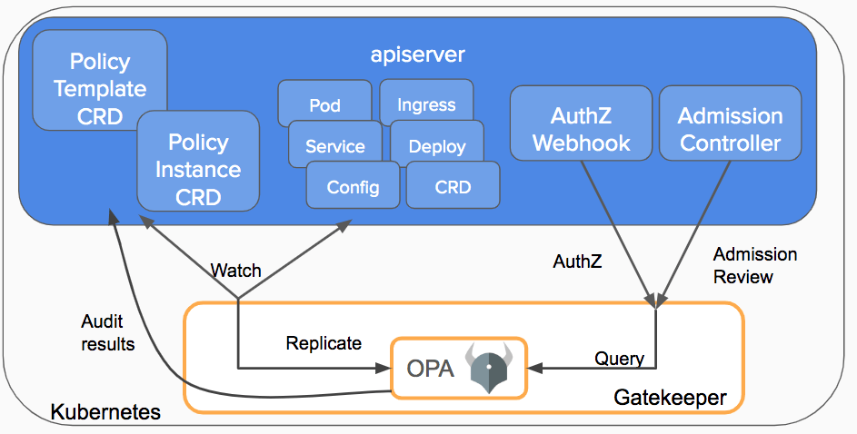
5. Integration with Image Scanning Tools
OpenShift can integrate with image scanning tools like Clair, Quay, or Aqua Security. These tools scan images for vulnerabilities, compliance issues, and other security risks.
- Automated Image Scanning: Configure OpenShift to automatically scan images upon upload or before deployment. Based on scan results, OpenShift can enforce policies to prevent the deployment of non-compliant images.
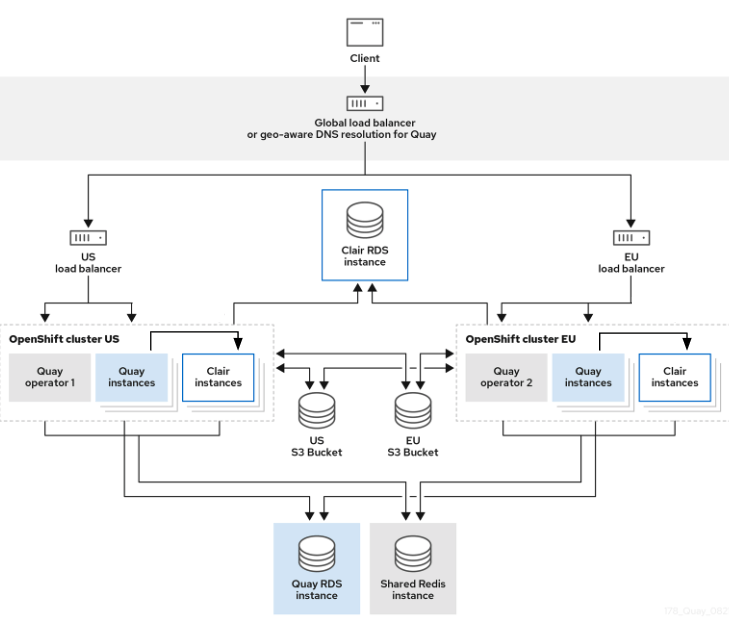
6. Custom Validation Webhooks
Custom webhooks can be developed to perform additional validations on images, such as ensuring certain labels are present or that images are from an internal registry.
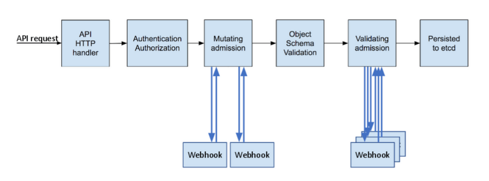
7. Deployment Configurations and Templates
OpenShift allows the use of templates and deployment configurations to enforce standards. By defining a set of allowed templates, you can ensure that only images from trusted sources are used.
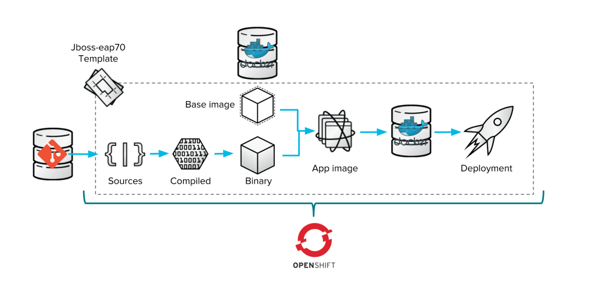
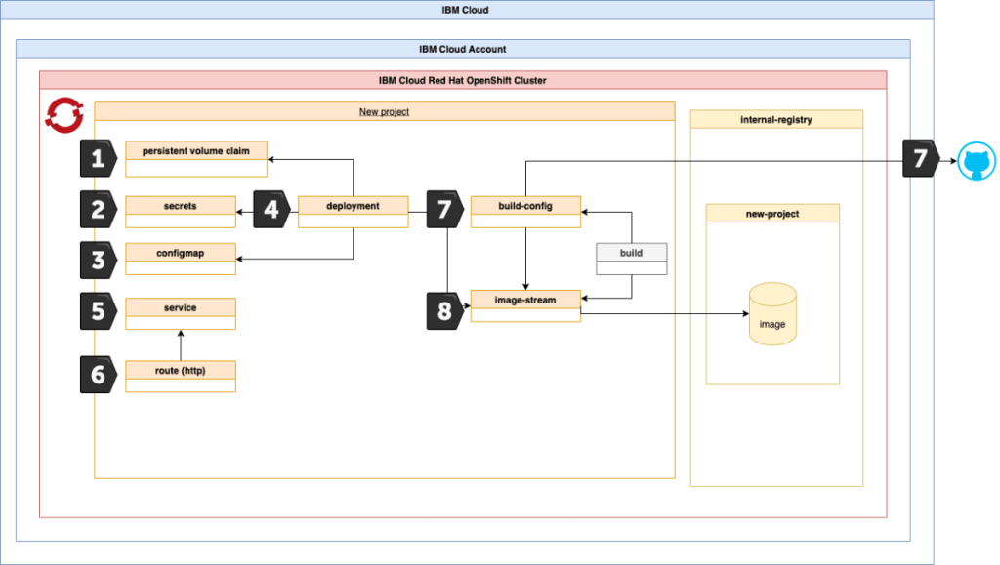
Summary
Image validation in OpenShift can be achieved using a combination of built-in tools, external integrations, and custom policies. Ensuring that images are validated before deployment helps maintain security, compliance, and operational integrity. By leveraging OpenShift’s features like ImageStreams, Admission Controllers, SCCs, OPA/Gatekeeper, and integration with image scanning tools, organizations can build robust validation mechanisms tailored to their specific needs.
If you have specific requirements or need further details on implementing any of these solutions, feel free to ask!
Reference
https://github.com/rifaterdemsahin/SecurityinOpenShift/blob/main/README.md
Imported from rifaterdemsahin.com · 2025